Tối ưu luồng bán trú Trường Mầm non Thượng Hồng: menu, quy trình 8 bước, chức năng từng màn hình, ma trận quyền và danh sách thay đổi so với FE/BE hiện tại. Cột "Cũ" dùng ảnh chụp thật FE; cột "Mới" là wireframe.
FE nhiều màn nhưng chạy dữ liệu demo theo luồng cũ; BE mới có sổ số suất.
/meal-counts: xem, xác nhận, điều chỉnh)/menu/*, /kitchen/*), dữ liệu demoonly(VP_ONLY…), chưa theo mã quyềnViền xanh = hệ thống ghi; viền xám = việc ngoài hệ thống. Thực đơn dùng chung toàn trường; từ bước 3 dữ liệu tách theo điểm trường.
| # | Bước | Ai · kênh | Màn hình | Đầu vào | Đầu ra | Rule |
|---|---|---|---|---|---|---|
| 1 | Lập & công bố thực đơn | PHT dinh dưỡng · Web | Kế hoạch tuần & công bố | Bộ mẫu / lập tay / AI nháp; món, định lượng; cấu hình nhóm tuổi; số trẻ dị ứng theo chất | Thực đơn tuần PUBLISHED cả trường; món thay thế; cảnh báo kho theo sĩ số dự kiến | C NUT-08 (02/11), 11, 13, 18–20, 23 |
| 1b | Bản dự trù, đặt hàng tươi | PHT · Web; gửi NCC (B) | Bản dự trù | Thực đơn tuần; sĩ số dự kiến điền sẵn nhóm tuổi × điểm trường | Bản dự trù, danh sách đặt hàng in | C NUT-07, NUT-12 |
| 2 | Báo ăn | GV · App; PH gửi đơn nghỉ | Điểm danh | Trẻ đang học; đơn nghỉ | Điểm danh (khóa ở giờ chốt) | C ATT-01, 02, 04, 06 |
| 3 | Chốt suất | Hệ thống; PHT điểm trường (HT thay) · Web | Sổ suất ăn | Điểm danh đã khóa | Suất điểm trường × ngày × bữa × lớp CONFIRMED | C NUT-01..04 |
| 4 | Tính nguyên liệu | Hệ thống | Bán trú hôm nay · Kho | Thực đơn tuần × suất đã xác nhận + thải bỏ | Nhu cầu ngày theo điểm trường; bút toán trừ kho (lô hết hạn trước); phần thiếu | C NUT-07, NUT-11 (P-38) |
| 5 | Tiếp nhận | Bếp kiểm, báo PHT (B); PHT ghi · Web | Kiểm nhận hàng tươi · Phiếu nhập | Bản dự trù; nhu cầu theo suất; phiếu giao | Kiểm nhận lần 1, 2; lô mới, trừ tiếp phần thiếu | C NUT-11, NUT-12 |
| 6 | Chế biến | Bếp · App xem; nấu (B) | Bếp hôm nay (App) | Thực đơn ngày, suất lớp × bữa, định lượng tổng, suất thay thế | Không ghi trạng thái nấu; lưu mẫu; ảnh bữa trong khung giờ | C AUTH-05, NUT-16, 21, 23; NUT-14 REMOVED |
| 7 | Bàn giao | Bếp (B) | Bếp hôm nay: bảng suất theo lớp | Suất đã xác nhận theo lớp | Không ghi; thiếu/thừa báo Zalo | C NUT-15 REMOVED, NUT-22 |
| 8 | Lưu hồ sơ | Bếp ghi hủy · App; PHT duyệt, in · Web | Duyệt mẫu · In biểu mẫu · Lịch sử kho | Bản ghi lưu/hủy mẫu | Nhãn, biểu mẫu (ký giấy — B); lịch sử suất, kho, ảnh | C NUT-21 · mẫu sổ P-26 |
"Cũ" = ảnh chụp thật FE (CareNest_FE, mock, tài khoản PHT demo, 02/11/2026). "Mới" = wireframe. Bấm ảnh để phóng to.
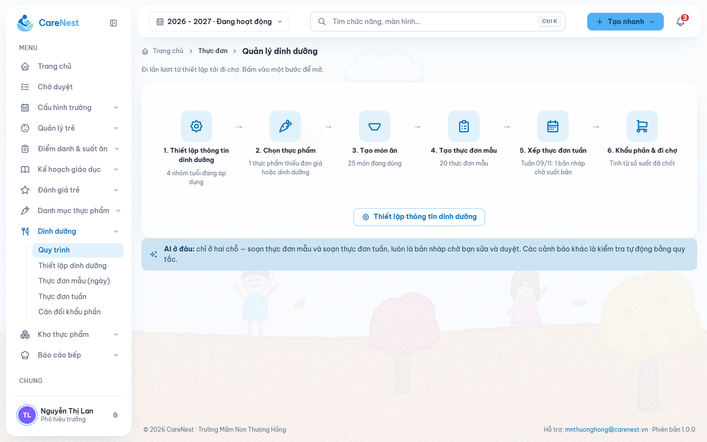
/menu/flow — 6 bước thiết lập → đi chợ, mỗi bước chỉ là link
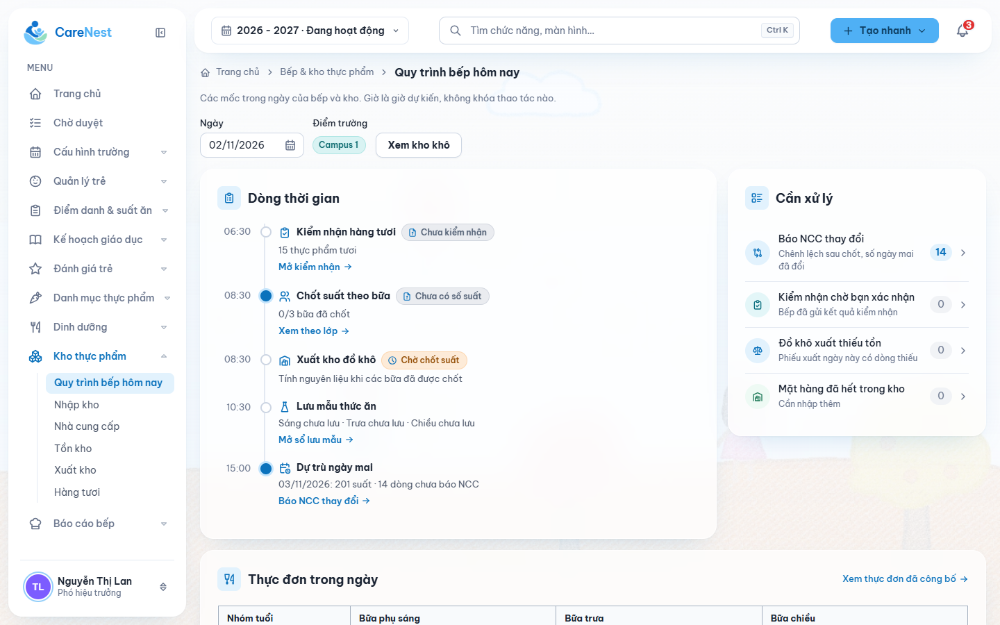
/kitchen — dòng thời gian bếp: kiểm nhận, chốt suất, xuất kho, lưu mẫu, dự trù
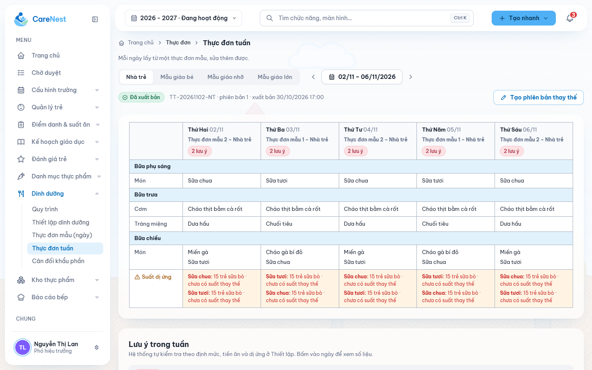
/menu/weekly — tab nhóm tuổi; mỗi ngày lấy một thực đơn mẫu; "Đã xuất bản"; nút "Tạo phiên bản thay thế"
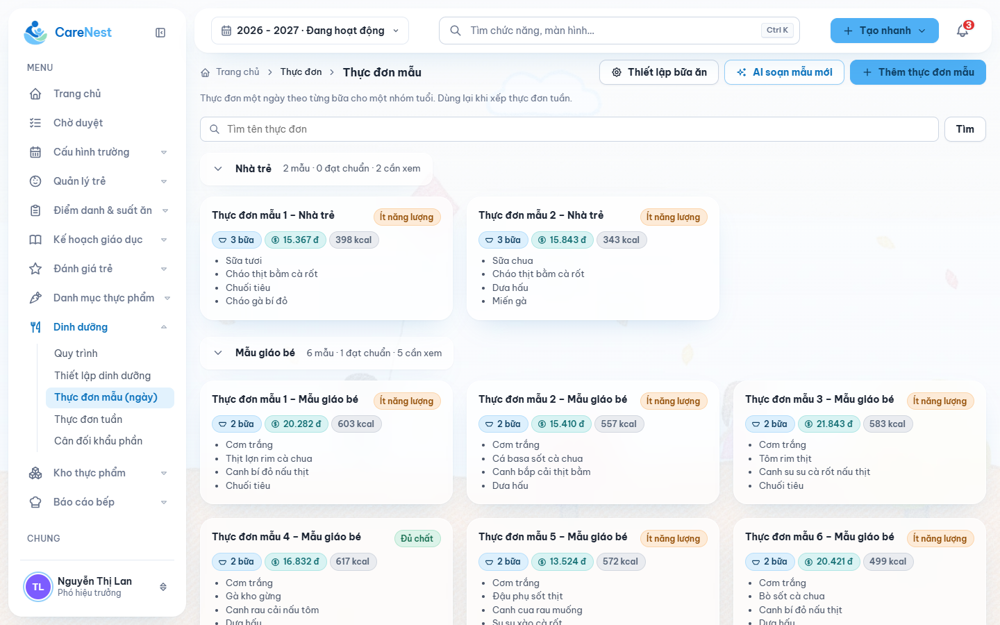
/menu/menus — thực đơn mẫu một ngày theo từng nhóm tuổi
| T2 | T3 | T4 | T5 | T6 | |
|---|---|---|---|---|---|
| Trưa | Cơm, cá kho | Cơm, gà ⚠ giá | Cơm, tôm ⚠ dị ứng | … | … |
| Chiều | Cháo | Bánh | … | … | … |
| Cân đối | ✓ | ✓ | ✗ đạm | ✓ | ✓ |
| T2 03/11 | T3 04/11 | T4 | |
|---|---|---|---|
| Trưa | Cơm, cá kho 📷 CS1 · CS2 | Cơm, gà 📷 chờ ảnh | … |
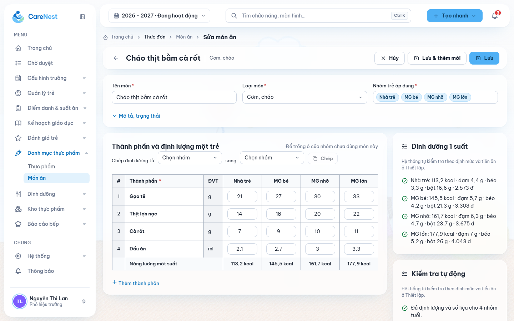
/menu/dishes/d02/edit — thành phần × 4 nhóm tuổi, "Chép định lượng từ … sang", dinh dưỡng 1 suất
/nutrition/dishes).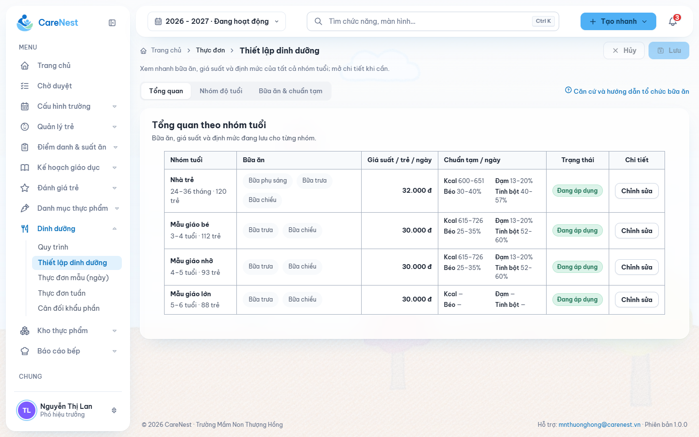
/menu/setup — bữa, giá suất, chuẩn tạm theo nhóm tuổi; thiếu ngày hiệu lực
/menu/prices; giá suất chỉ sửa ở đây.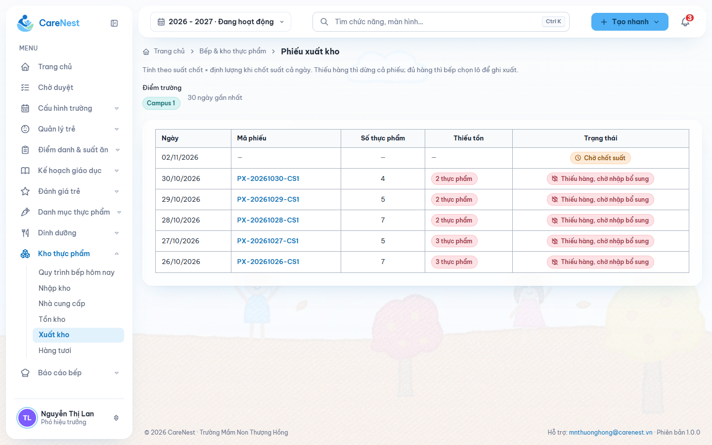
/kitchen/stock-issues — "thiếu hàng thì dừng cả phiếu; đủ hàng thì bếp chọn lô"
| Ngày | Loại | CS | Đường |
|---|---|---|---|
| 03/11 | Nhập lô B | CS2 | +5 kg |
| 04/11 | Trừ khi xác nhận suất | CS2 | −3 kg |
| 04/11 | Xác nhận lại suất | CS2 | −0,2 kg |
| 05/11 | Thiếu, chờ phiếu bổ sung | CS2 | 1 kg |
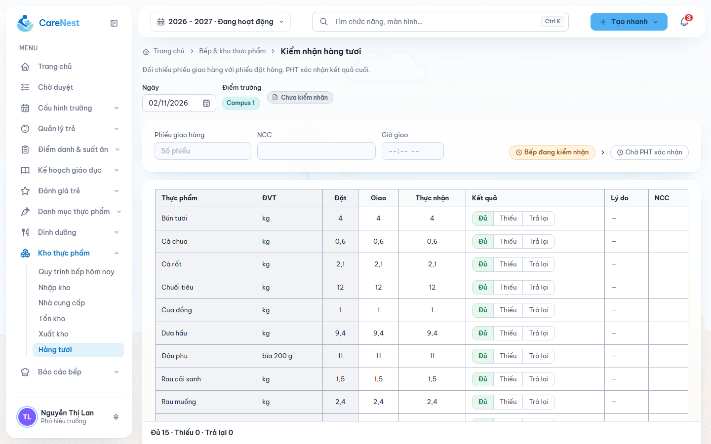
/kitchen/fresh-receipts — Đặt / Giao / Thực nhận · Đủ / Thiếu / Trả lại
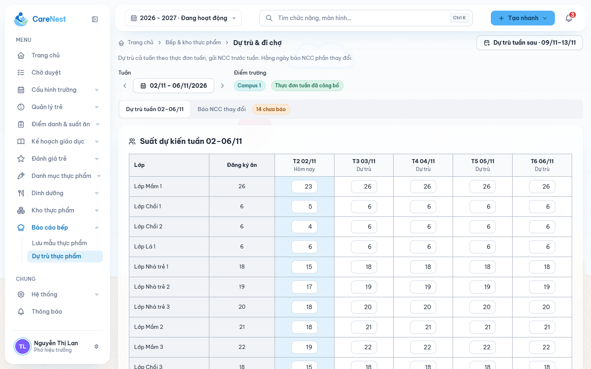
/kitchen/forecast — suất dự kiến theo lớp × ngày trong tuần
| Thực phẩm | Theo dự trù | Theo suất chốt | Thực nhận | KQ |
|---|---|---|---|---|
| Thịt heo | 6 kg | 6,3 kg | 6 kg | Thiếu 0,3 |
| Rau cải | 8 kg | 7,6 kg | 8 kg | Đủ |
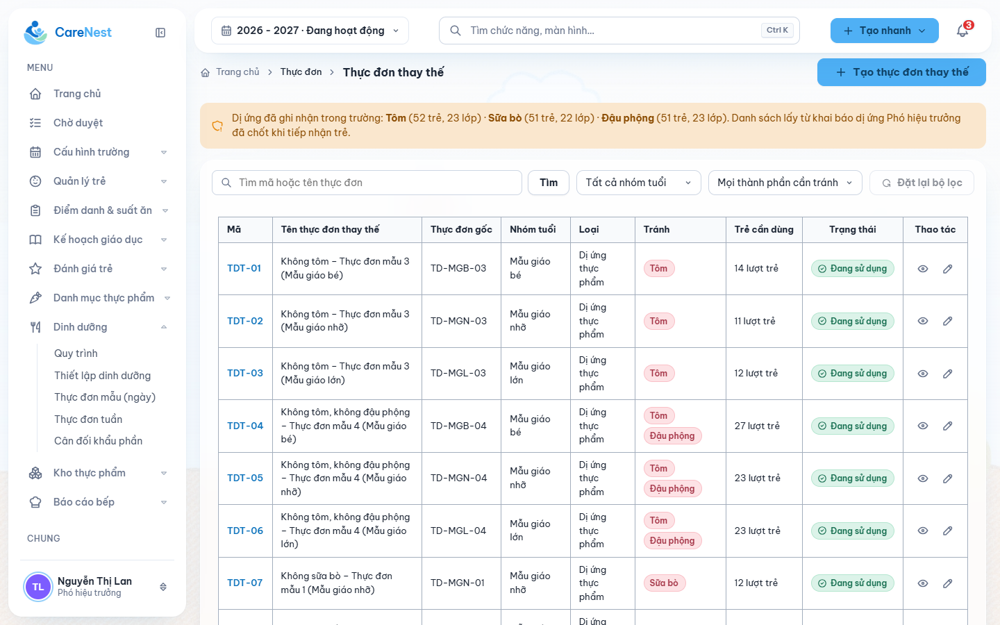
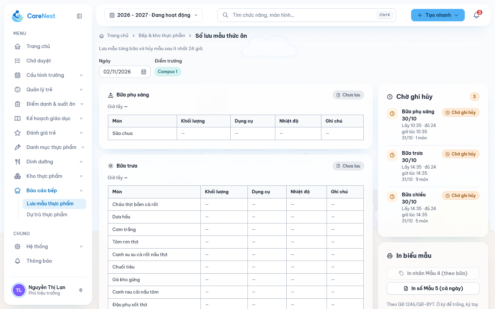
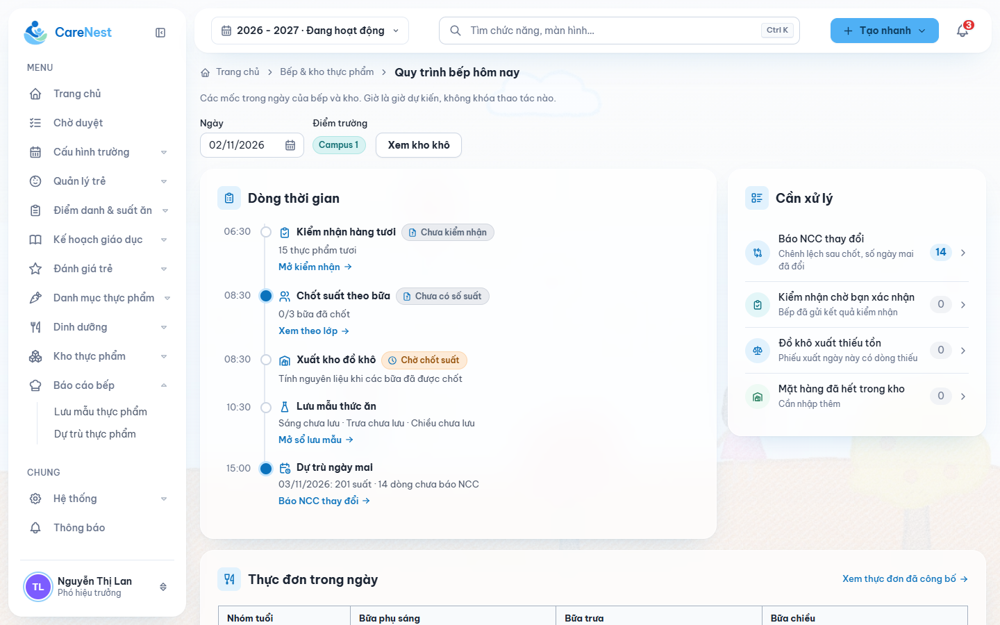
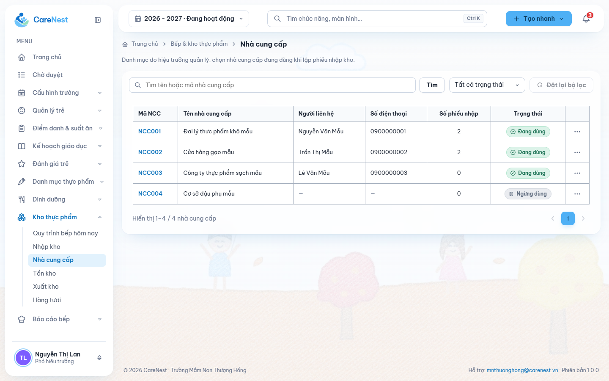
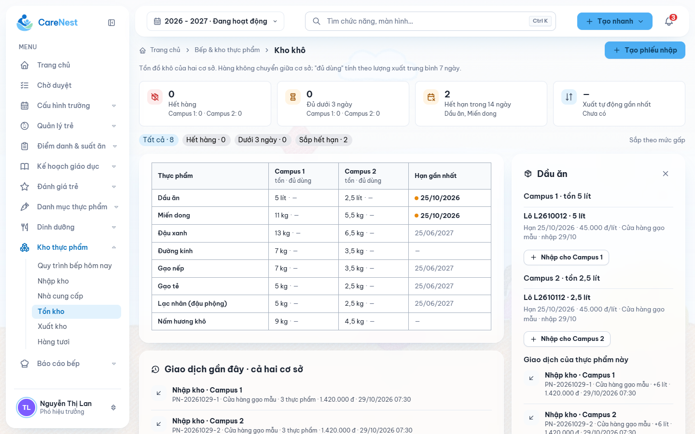
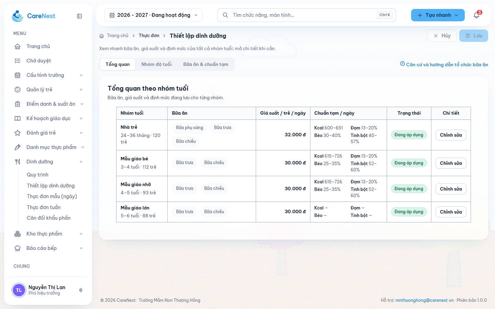
| Màn hình (kênh) | Chức năng | Đầu vào | Đầu ra | Người dùng |
|---|---|---|---|---|
| Bán trú hôm nay (Web) | Việc của ngày theo điểm trường, nút tới màn xử lý | Suất, kho, kiểm nhận, mẫu, ảnh, thực đơn tuần sau | — (đọc) | PHT, HT |
| Kế hoạch tuần & công bố (Web) | Lưới ngày × bữa × khối; sao từ bộ mẫu; AI nháp; kiểm tự động; tab cân đối; công bố tuần | Món, cấu hình, số trẻ dị ứng theo chất | Tuần DRAFT → PUBLISHED | PHT có MENU_MANAGE |
| Bộ thực đơn mẫu (Web) | Bộ 4 tuần, nhãn mùa, theo khối | Món | Bộ mẫu | như trên |
| Món thay thế dị ứng (Web) | Chất × món → món thay thế; hệ thống gợi ý | Món, chất dị ứng | Cặp thay thế dùng chung | như trên |
| Sổ suất ăn (Web) | Xem, xác nhận, xác nhận lại | Điểm danh đã khóa | Suất CONFIRMED, lịch sử | PHT điểm trường, HT |
| Bếp hôm nay (App bếp; Web xem) | Thực đơn ngày, suất lớp × bữa, định lượng tổng, suất thay thế theo món × lớp | Thực đơn tuần, suất | — | Bếp; PHT/HT xem |
| Bản dự trù (Web) | Chọn kỳ, điểm trường; sĩ số dự kiến điền sẵn; in đặt hàng | Thực đơn tuần, sĩ số | Bản dự trù | PHT có STOCK_MANAGE |
| Kiểm nhận hàng tươi (Web) | Theo dự trù / theo suất / thực nhận / kết quả | Bản dự trù, nhu cầu theo suất | Kiểm nhận 2 lần | như trên |
| Kho khô (Web) | Tồn theo lô; phiếu nhập; lịch sử; phần thiếu | Phiếu giao NCC | Lô, bút toán | như trên |
| Duyệt mẫu, In (Web) | Hàng chờ duyệt; in nhãn, biểu mẫu | Bản ghi của bếp | Bản ghi đã duyệt, file in | PHT có FOOD_SAFETY_APPROVE |
| Lưu mẫu (App bếp) | Ghi lưu (món điền sẵn); ghi hủy ≥24 giờ; xem trạng thái | Thực đơn ngày | Bản ghi chờ duyệt | Bếp |
| Ảnh bữa (App bếp; xem Web/App PH) | Chụp/sửa trong khung giờ | Ảnh | Ảnh điểm trường × ngày × bữa | Bếp; PHT, HT, PH xem |
| Danh mục & thiết lập (Web) | Thực phẩm, món, cấu hình nhóm tuổi, NCC; HT: khung giờ ảnh | Viện Dinh dưỡng, chuẩn Bộ | Danh mục chung | PHT có NUTRITION_MANAGE; HT |
| Thực đơn (App PH, GV) | Thực đơn tuần đã công bố + ảnh bữa | — | — | PH; GV P |
Quyền hiệu lực = phần cố định của role ∪ (ma trận ∪ GRANT − REVOKE); GRANT mang phạm vi điểm trường/cả trường (AUTH-10, AUTH-20, ADR-0017, ADR-0023). Phạm vi campus/lớp/trẻ luôn kiểm ở BE. Mã mới là đề xuất thiết kế P.
| Mã | Phạm vi | Mặc định | HT cấu hình cho | Nghiệp vụ |
|---|---|---|---|---|
MEAL_COUNT_CONFIRM đã có | điểm trường, GRANT nâng T | HT; PHT (bật, điểm trường mình) | PHT | Xác nhận, xác nhận lại suất (NUT-02) |
NUTRITION_MANAGE plan L1 | T | HT | PHT (tắt) | Danh mục, cấu hình nhóm tuổi, NCC |
MENU_MANAGE P | T | HT | PHT (tắt) | Bộ mẫu, kế hoạch tuần, món thay thế, công bố tuần |
STOCK_MANAGE P | điểm trường, GRANT nâng T | HT | PHT (tắt) | Phiếu nhập kho khô, bản dự trù, kiểm nhận hàng tươi |
FOOD_SAFETY_APPROVE P | điểm trường, GRANT nâng T | HT | PHT (tắt) | Duyệt lưu/hủy mẫu, in biểu mẫu |
KITCHEN_RECORD P | điểm trường của tài khoản | Bếp | Bếp | Ghi lưu/hủy mẫu, đăng ảnh bữa |
MENU_PUBLISHED_EDIT P | T | HT | PHT (tắt) | Sửa thực đơn đã công bố khi bất khả kháng (P-39 duyệt 02/11) |
PHT không có mã vẫn xem dữ liệu bán trú mọi điểm trường (AUTH-20 C). HT có sẵn các mã để làm thay khi PHT vắng, theo cách NUT-02 áp cho số suất (P với mã mới). Khung giờ ảnh: phần cố định của HT (NUT-16 C).
T = toàn trường · "điểm trường" = điểm trường được phân công, hoặc cả trường nếu HT cấp phạm vi SCHOOL · L = lớp phân công · Tr = trẻ liên kết · TK = điểm trường của tài khoản bếp · — = không. Admin không có quyền bán trú (AUTH-06, P-16). Audit "Có" = người, thời điểm, trước/sau (+ lý do khi ghi).
| Chức năng | Action | HT | PHT có mã | PHT khác | GV | Bếp | PH | Điều kiện · giới hạn | Audit | TT |
|---|---|---|---|---|---|---|---|---|---|---|
| Danh mục & thiết lập | ||||||||||
| Thực phẩm, món | View | T | T | T | — | — | — | — | C AUTH-20 | |
| Create / Update | T | T NUTRITION_MANAGE | — | — | — | — | Nguồn dinh dưỡng bắt buộc; món tham khảo chỉ đọc | Có | C NUT-05, 18 | |
| Delete | T | T | — | — | — | — | Chỉ ngừng dùng, không xóa cứng | Có | P | |
| Import | T | T | — | — | — | — | Tất cả hoặc không | Có | P | |
| Cấu hình nhóm tuổi | Create / Update | T | T NUTRITION_MANAGE | — | — | — | — | Chỉ bản có ngày hiệu lực > hôm nay (khóa bản đã hiệu lực: P) | Có | C NUT-17 |
| Nhà cung cấp | View | T | T | T (ẩn CCCD — P) | — | — | — | CCCD là dữ liệu cá nhân | — | C NUT-12 |
| Create / Update / Delete | T | T NUTRITION_MANAGE | — | — | — | — | Delete = ngừng dùng | Có | C NUT-12 | |
| Khung giờ ảnh bữa | Update | T | — | — | — | — | — | Chung toàn trường | Có | C NUT-16 |
| Thực đơn & dinh dưỡng | ||||||||||
| Bộ mẫu, kế hoạch tuần, món thay thế | View | T | T | T | — | — | — | Bản nháp chỉ BGH thấy | — | C |
| Create / Update / Delete | T | T MENU_MANAGE | — | — | — | — | Chỉ tuần DRAFT | Có | C NUT-08, 13, 23 | |
| Công bố thực đơn tuần | Publish | T | T MENU_MANAGE | — | — | — | — | Mọi ngày đạt cân đối; cả trường một lần; không chờ suất; thiếu kho chỉ cảnh báo | Có | C NUT-08, NUT-11 |
| Thực đơn tuần đã công bố | View | T | T | T | T (P) | TK | Tr | PH chỉ bản đã công bố | — | C AUTH-05, PAR-01 |
| Update (ngoại lệ) | T | T MENU_PUBLISHED_EDIT | — | — | — | — | Ngày chưa tới / hôm nay trước giờ chốt; lý do bắt buộc; báo bếp + PH; ngày đã có suất ⇒ tính lại kho | Có, lý do | C NUT-08 (P-39) | |
| Export (in thực đơn) | T | T | T | — | — | — | — | P | ||
| Báo ăn, chốt suất | ||||||||||
| Điểm danh = báo ăn | Create / Update | — | — | — | L | — | — | Trước giờ chốt hoặc khi được mở lại | Có | C ATT-01, 02 |
| Mở lại sau giờ chốt | T | điểm trường | điểm trường | — | — | — | Lý do bắt buộc | Có, lý do | C ATT-08 | |
| Sổ suất ăn | View | T | T | T | L (P) | TK, chỉ số đã xác nhận | — | Bếp không thấy tên trẻ | — | C NUT-03, AUTH-05 |
| Confirm / xác nhận lại | T | điểm trường MEAL_COUNT_CONFIRM | — | — | — | — | Sau giờ chốt; số sai ⇒ mở lại điểm danh, không sửa tay | Có | C NUT-02..04 | |
| Kho & hàng tươi | ||||||||||
| Trừ kho khô theo suất | (hệ thống) | — | — | — | — | — | — | Khi suất điểm trường × ngày xác nhận; lô hết hạn trước; thiếu ⇒ ghi thiếu, không chặn | Có (bút toán) | C NUT-11 (P-38) |
| Kho khô: tồn, lịch sử | View | T | T | T | — | — | — | — | C NUT-11 | |
| Phiếu nhập kho khô | Create | T | điểm trường STOCK_MANAGE | — | — | — | — | NCC, lô, hạn, giá; xác nhận ⇒ tạo lô, trừ tiếp phần thiếu | Có | C NUT-11 |
| Update / Delete | T | điểm trường | — | — | — | — | Trước xác nhận: sửa/xóa. Sau: chỉ bút toán đảo khi lô chưa bị trừ, lý do bắt buộc | Có, lý do | P | |
| Chuyển kho, kiểm kê | — | — | — | — | — | — | Không có | — | C NUT-11 | |
| Bản dự trù hàng tươi | Create / Update · Export | T | điểm trường STOCK_MANAGE | — | — | — | — | Sĩ số dự kiến điền sẵn, sửa được; in đặt hàng | Có | C NUT-07, 12 |
| Kiểm nhận hàng tươi | Create / Update | T | điểm trường STOCK_MANAGE | — | — | — (báo ngoài HT) | — | Lần 2 mở khi suất ngày đã xác nhận | Có | C NUT-12 |
| Bếp & an toàn thực phẩm | ||||||||||
| Bếp hôm nay | View | T | T | T | — | TK | — | Dị ứng chỉ dạng số suất | — | C AUTH-05, NUT-23 |
| Lưu mẫu, hủy mẫu | Create | — | — | — | — | TK KITCHEN_RECORD | — | Hủy sau ≥24 giờ | Có (theo tài khoản) | C NUT-21 |
| Approve | T | điểm trường FOOD_SAFETY_APPROVE | — | — | — | — | Đã duyệt thì khóa (P) | Có | C NUT-21 | |
| Export | T | điểm trường | — | — | — | — | Chỉ bản ghi đã duyệt | — | C NUT-21 | |
| Ảnh bữa | Create / Update | — | — | — | — | TK KITCHEN_RECORD | — | Chỉ trong khung giờ theo bữa | Có | C NUT-16 |
| View | T | T | T | — | TK | điểm trường của con | — | C NUT-16, PAR-01 | ||
| Điều phối, phân quyền | ||||||||||
| Bán trú hôm nay | View | T | T | T | — | — | — | Lọc theo điểm trường | — | P màn mới |
| Phân quyền các mã | Update | T | — | — | — | — | — | Lý do bắt buộc; không tự sửa mình | Có | C AUTH-10..14 |
| Ngoại lệ | Cách xử lý | TT |
|---|---|---|
| Sửa thực đơn đã công bố | Chỉ bất khả kháng, người có MENU_PUBLISHED_EDIT: ngày chưa tới hoặc hôm nay trước giờ chốt, lý do, báo bếp + phụ huynh | C NUT-08 (P-39) |
| Điều chỉnh suất sau giờ chốt | Mở lại điểm danh → GV sửa → xác nhận lại; kho ghi chênh lệch | C ATT-08, NUT-03, 04 |
| Thay đổi dữ liệu kho | Không sửa bút toán; phiếu nhập sai ⇒ bút toán đảo có lý do; không kiểm kê, không chuyển cơ sở | C / bút toán đảo P |
| Thiếu kho khi xác nhận suất | Không chặn; ghi thiếu; PHT mua thêm (B), nhập bổ sung ⇒ trừ tiếp | C NUT-11 (P-38) |
| Sai lệch hàng tươi | Ghi ở kiểm nhận; báo NCC ngoài hệ thống | C NUT-12 |
| Thiếu/thừa suất thực tế khi chia | Báo PHT qua Zalo; hệ thống không ghi | C NUT-22 |
Thực phẩm, món, cấu hình nhóm tuổi, NCC, bộ mẫu, kế hoạch và thực đơn tuần đã công bố, món thay thế dị ứng, khung giờ ảnh.
Sổ suất, lô và bút toán kho khô, phần thiếu, bản dự trù, kiểm nhận hàng tươi, lưu/hủy mẫu, ảnh bữa, tài khoản bếp.
Điểm danh, suất theo lớp; dị ứng của trẻ ở module child — bếp chỉ thấy số đếm.
Bếp dùng chung một tài khoản mỗi cơ sở (AUTH-22), không thấy tên trẻ (AUTH-05).
| Lớp | Suất | Thay thế |
|---|---|---|
| Lá 1 | 28 | 1 (cá → gà) |
| Chồi 2 | 30 Mới | — |
| Hiện tại | Mới | Căn cứ |
|---|---|---|
| Rule 01/11 + bản HTML trước: công bố thực đơn chuẩn theo ngày sau chốt suất | Công bố cả tuần một lần; đến ngày chỉ thêm ảnh | User chốt 02/11 |
| Trừ kho khi công bố ngày, chặn công bố nếu thiếu | Trừ khi suất điểm trường xác nhận; thiếu không chặn | NUT-11 (P-38 duyệt 02/11) |
| FE: "Tạo phiên bản thay thế" sau xuất bản | Bỏ; ngoại lệ bất khả kháng qua mã riêng (P-39) | NUT-08 |
| FE: 4 nhóm menu + 2 trang quy trình | 6 nhóm, một trang Bán trú hôm nay | Yêu cầu 02/11 |
| FE: bếp dùng Web | Bếp chỉ App | AUTH-21 |
| FE: xuất kho, bếp chọn lô | Trừ tự động, lịch sử, phần thiếu | NUT-11 |
| FE: hàng tươi bếp ghi → PHT xác nhận; dự trù theo lớp × tuần | PHT ghi 2 lần; dự trù theo kỳ, nhóm tuổi × điểm trường | NUT-07, NUT-12 |
| FE: thực đơn mẫu một ngày; thực đơn thay thế nguyên ngày | Bộ 4 tuần nhãn mùa; món thay thế chất × món | NUT-13, NUT-23 |
| FE: trạng thái chuẩn bị | Bỏ; chế biến, bàn giao là việc ngoài hệ thống | NUT-14, 15 REMOVED |
| FE: quyền theo role cứng | Mã quyền cấu hình được | AUTH-10, AUTH-20 |
| "Sổ báo ăn" ở nhóm Điểm danh | Sổ suất ăn ở Vận hành bếp cho PHT/HT | NUT-02 |
| Giá suất ở 2 màn; cấu hình chưa có ngày hiệu lực | Gộp vào cấu hình nhóm tuổi có phiên bản | NUT-17, NUT-19 |
Mỗi lát một plan con. L6, L7 cắt được nếu thiếu thời gian. Không thêm kiểm kê, chuyển kho, theo dõi nấu, bàn giao.
| Lát | BE | FE / App | Cần trước |
|---|---|---|---|
| L1 Danh mục | Thực phẩm, món + gam/trẻ, cấu hình nhóm tuổi, NCC, NUTRITION_MANAGE | Dọn menu 6 nhóm; Danh mục & thiết lập | — |
| L2 Kho khô | Phiếu nhập → lô, tồn, lịch sử, STOCK_MANAGE | Kho thực phẩm; bỏ xuất kho | L1 |
| L3 Thực đơn | Bộ mẫu, kế hoạch tuần, kiểm tra, món thay thế, công bố tuần, trừ kho khi xác nhận suất, MENU_MANAGE | Kế hoạch tuần, Bán trú hôm nay | L1, L2 |
| L4 Hàng tươi | Bản dự trù, kiểm nhận 2 lần | Vận hành bếp | L3 |
| L5 Bếp + ATTP | API bếp, lưu/hủy mẫu + duyệt + in, ảnh bữa, FOOD_SAFETY_APPROVE, KITCHEN_RECORD | App bếp; Web duyệt/in | L3 |
| L6 Phụ huynh | Đọc thực đơn tuần, ảnh bữa | App phụ huynh | L3, L5 |
| L7 AI (tùy chọn) | Gợi ý kế hoạch tuần qua integration/ | Nút AI gợi ý | L3 |
docs/plans/completed/2026-11-02-day-boarding-l1-catalog.md
NUTRITION_MANAGE, entityCareNest_FE/docs/plans/active/2026-11-02-day-boarding-l1-catalog-fe.md
| ID | Câu hỏi | Đề xuất của agent |
|---|---|---|
| — | GV xem thực đơn tuần và sổ suất lớp mình? | Cho xem (chỉ đọc) |
| — | Bản lưu mẫu khóa sau khi PHT duyệt? Phiếu nhập sai xử lý bằng bút toán đảo? | Có / có |
| P-26, P-27 | Mẫu sổ lưu mẫu; kiểm thực ba bước | Ngoài lát hiện tại |